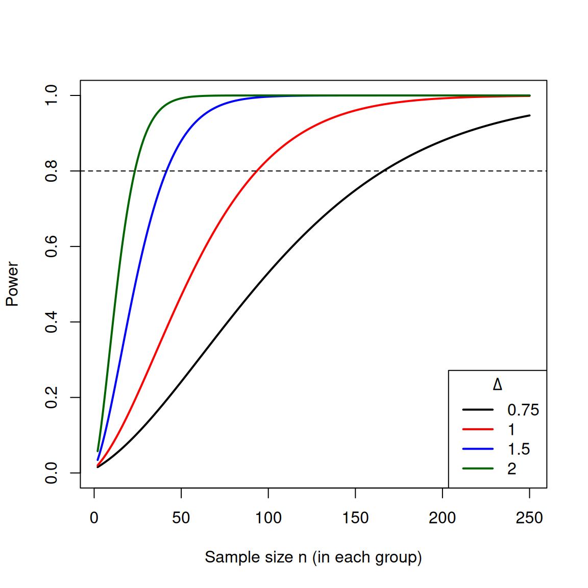

Power Calculations
Introduction
The topic of today’s lecture is power. That is, the power of a statistical test to reject a false null. Recall that power is the complement of the probability of a type II error (under a particular alternative distribution).
We have talked about power in terms of comparing tests and making optimal choices about tests. But in fact its most common usage is in designing studies. Because of the role of the null hypothesis, the power is (colloquially) “the chance you will find something if there is something there to find.” For this reason, calculating the power ahead of seeing any data can help you make choices about how big of a sample size you have or what size effect you can realistically detect.
We are going to look at what affects the power of a test in the specific case of comparing two independent samples. This is just a brief snapshot into the kind of considerations and calculations one would want to make in thinking about designing your study.
What quantities impact power?
Let \(\Delta=\mu_X-\mu_Y\). We are testing \(H_0 : \Delta = 0\) against \(H_a : \Delta \neq 0\).
What quantities affect power?
- The distance between \(\mu_X\) and \(\mu_Y\), that is, \(|\Delta|=|\mu_X - \mu_Y|\), also called the effect size.
- The significance level \(\alpha\), or probability of Type I error.
- Population variances \(\sigma_X^2\), \(\sigma_Y^2\).
- The sample sizes \(n_X\), \(n_Y\).
Of these, the most interesting quantities are the effect size and the sample size. \(\alpha\) is generally something standard like 0.05 or 0.01 and we don’t think about it much; and the population variances we can’t do anything about and are usually more of a nuisance in our considerations.
On the other hand, while we can’t control the effect size, it is what we are interested in, and considering the power of our test for different possible values will tell us what kind of results we will be able to detect. And the sample size is the only one we can potentially control.
Power Calculations
Power calculations involve calculating the power to detect (i.e., reject the null for) a difference in means, for a specific sample size.
The procedure is the same as we have seen before: fix the test, and compute its probability of rejecting under the alternative. This involves finding the distribution of the test statistic under the alternative. Since our tests are two-sided, the rejection region has two parts, one in each tail.
As mentioned above, there are a lot of variables floating around for which we could want to solve. Power calculations usually involve simplifying the situation so you can calculate what you need. So we will assume:
The test is fixed (i.e. a specific \(c\) and \(\alpha\)).
\(n=n_X=n_Y\) – unless we have a reason otherwise, we almost always try to get the same numbers in each group.1
We know the variances \(\sigma_X^2\), \(\sigma_Y^2\).
We generally avoid making such an assumption, but we do for power. Power calculations are always approximations and require a lot of assumptions. This assumption is really an assumption that you know something about your data, for example from preliminary trials.
Our data is normal. This isn’t absolutely necessary, but since we are making approximations, we often just work in normal space, especially if we are doing calculations by hand. That way you don’t have to worry about the degrees of freedom of the \(t\) distribution being a function of \(n\).
Then there are three things we might want to determine:
- Sample Size: We fix the power we want, and the effect size we want to detect, and determine the needed sample size.
- Size of the effect: We fix the power we want, and the sample size we can afford, and determine the minimum effect we can detect.
- Power: We fix the sample size and the size of the effect, and determine what will be our power.
Example of Power Calculations for the Two-Sample \(Z\) Test
Suppose we are going to have two samples, \(X_1, \ldots, X_{n_X} \stackrel{iid}{\sim} N(\mu_X, \sigma_X^2)\) and \(Y_1, \ldots, Y_{n_Y} \stackrel{iid}{\sim} N(\mu_Y, \sigma_Y^2)\), with \(n_X=n_Y=n\) and known \(\sigma^2_X\) and \(\sigma_Y^2\). Let \(\Delta=\mu_X-\mu_Y\). The test is two-sided: \[ H_0 : \Delta = \Delta_0=0, \qquad H_a : \Delta \neq 0. \] We want the power at a particular alternative value \(\Delta_a\). By symmetry the power is the same for \(\Delta_a\) and \(-\Delta_a\), so we take \(\Delta_a > 0\).

The test statistic (with \(n_X = n_Y=n\)) is: \[ Z = \frac{(\bar{X} - \bar{Y})}{\sqrt{\dfrac{\sigma^2_X}{n} + \dfrac{\sigma^2_Y}{n}}} = \frac{\sqrt{n}(\bar{X} - \bar{Y})}{\sqrt{\sigma^2_X+\sigma^2_Y}} \] We’ll call it \(Z\) rather than \(T\) to remind ourselves we are assuming we know \(\sigma^2\).
For a two-sided test \[ P_{H_0}(|Z| > z_{\alpha/2})=\alpha \] So if we set our significance level to \(\alpha = 0.01\), we reject when \(|Z| > z_{\alpha/2}=2.576\).
Now, we have to consider an alternative \(\Delta_a>0\).
Under \(H_a\), we have an alternative value \(\Delta_a > 0\). We know that if \(\Delta_a\) is the true value, then \[\frac{(\bar{X} - \bar{Y})-\Delta_a}{\sqrt{\dfrac{\sigma^2_X}{n} + \dfrac{\sigma^2_Y}{n}}}\sim N(0,1)\] So we rewrite our test statistic by adding and subtracting \(\Delta_a\): \[ \begin{aligned} Z &= \frac{\bar{X} - \bar{Y}}{\sqrt{\dfrac{\sigma^2_X}{n} + \dfrac{\sigma^2_Y}{n}}} \\ &= \underbrace{\frac{\bar{X} - \bar{Y} - \Delta_a}{\sqrt{\dfrac{\sigma^2_X}{n} + \dfrac{\sigma^2_Y}{n}}}}_{\sim\, N(0,1) \text{ under } H_a} + \frac{\Delta_a}{\sqrt{\dfrac{\sigma^2_X}{n} + \dfrac{\sigma^2_Y}{n}}}. \end{aligned} \] Call the first term \(Z_a\), and let \(\tau=\frac{\Delta_a}{\sqrt{\dfrac{\sigma^2_X}{n} + \dfrac{\sigma^2_Y}{n}}}\).
The probability calculation for the power has two parts, one for each part of the rejection region: \[ \begin{aligned} \text{Power} = P_{H_a}\left(|Z| > 2.576\right) &= P(Z_a + \tau > 2.576) + P(Z_a + \tau < -2.576)\\ &= 1-\Phi\left(2.576 - \tau\right) + \Phi\left(-2.576 - \tau\right). \end{aligned} \]
When \(\tau\) is large and positive, as it will be here because we’re assuming \(\Delta_a>0\), the second term (the probability of rejecting in the wrong tail) is essentially \(0\)2, so \[\text{Power} \approx 1-\Phi\left(2.576 - \tau\right)=\Phi\left(\tau-2.576\right).\] \(\tau\) depends on \(\Delta_a\) and \(n\), which are variables we might be interested in. So we have to invert to find what we want.
Example 1 Suppose I want the power to be 0.9 for detecting a difference in means that is \(\Delta=1\). And suppose \(\sigma_X=\sigma_Y=2\). What sample size would I need?
We have \[\tau=\frac{1}{2\sqrt{2/n}}=\sqrt{n/8}.\] Setting power equal to the desired \(0.9\): \[\Phi\left(\sqrt{n/8}-2.576\right) = 0.9.\]
Solving for \(n\): \[\sqrt{n/8}-2.576 = \Phi^{-1}(0.9) = 1.2816,\] \[\sqrt{n/8} = 1.2816 + 2.576 = 3.857 \implies n = 8\times 3.857^2 \approx 119.0 \implies n \geq 120.\]
Therefore, we need \(n \geq 120\) to achieve power of at least 90%. (The neglected term is about \(\Phi(-6.4)\), which is negligible.)
Exercise 1 Suppose instead I have a sample size of \(30\) in each group, and again suppose \(\sigma_X=\sigma_Y=2\). What is my power for detecting a difference in means that is \(\Delta=1\)?
What about if \(\sigma_X=\sigma_Y=0.05\)? Before doing any calculations, what do you expect to happen?
Power Plots
Often we are in a situation where we need to make judgement calls, and balance between power, sample size, and/or effect size. So we might plot a curve that describes the power, rather than a single value.
Consider our example above, where we assume \(\sigma_X=\sigma_Y=2\). Suppose we know we want to have power of 0.80, but we are uncertain about the balance between our effect size value \(\Delta\) and our sample size \(n\). We could plot the equations above as a function of \(n\) for different values of \(\Delta\).
We can see immediately roughly what sample size we would need for different choices of \(\Delta\).
Effect Size
We have been talking about the size of the effect, namely the alternative value of \(\Delta\) we would be able to detect. We have assumed we know the values of \(\sigma_X\) and \(\sigma_Y\).
Frequently people calculate power based on a standardized effect size3 \[\frac{\Delta}{\sigma}\] where \(\sigma_X=\sigma_Y=\sigma\).
This means we are looking at the size of the difference in means relative to the inherent variability of our data. This can be helpful, because you don’t have to know your variance terms to calculate power, so you don’t need preliminary data to calculate power. It gives “generic” sample size calculations.
However, relying only on this standardized effect size also erases the connection of your power calculations to the context of your data. When you are actually familiar with the data and what it means, then the actual value of \(\Delta\) means something, while the standardized effect size does not.
Note
Effect sizes are also often calculated after you have collected the data, where instead you actually calculate what you saw, \[d=\frac{\bar{X}-\bar{Y}}{\hat\sigma_{pooled}}\] where \(\hat\sigma_{pooled}\) is the pooled estimate of the standard deviation of the two populations; this is called Cohen’s d. Reporting this in addition to your p-value helps people to see how big your effect is relative to the population variability. Notice the denominator is not the \(\hat{SE}(\hat\Delta)\) and thus doesn’t depend on \(n\) (unlike the standard error). So it gives you a sense of whether you measured large differences relative to the natural variability in your observations.
Footnotes
This doesn’t have to be the case, and you can do the below calculations with different assumptions; for example, \(n_X=c n_Y\) or you know \(n_X\) and want to know how big \(n_Y\) should be. ↩︎
You can do these calculations without ignoring the other side, but it’s not usually worth the complexity.↩︎
This standardized effect size is usually called \(\Delta\), but since that conflicts with our notation, I haven’t done that here.↩︎